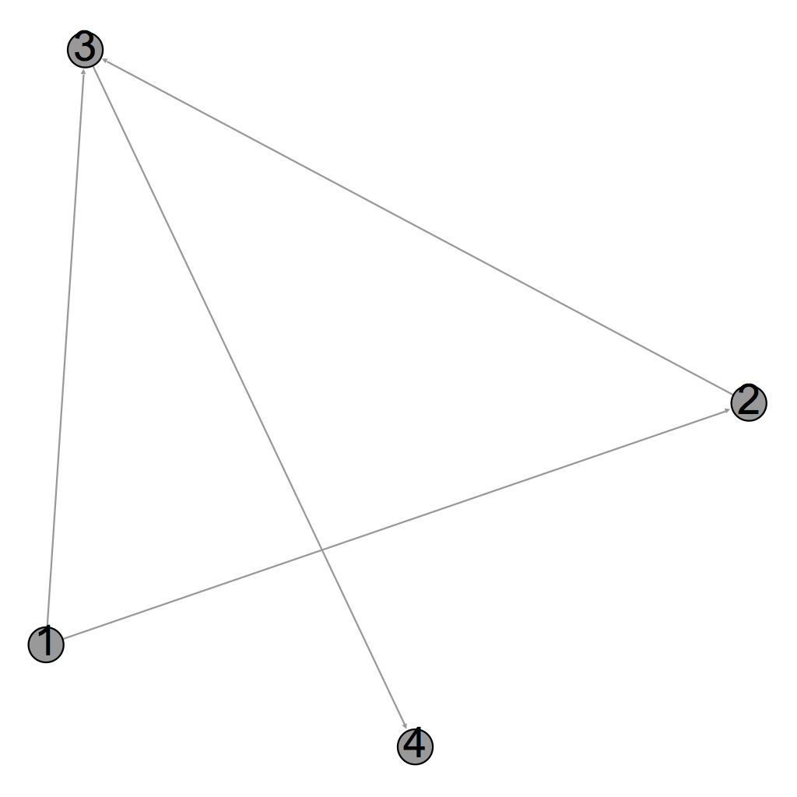
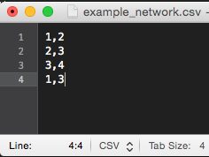
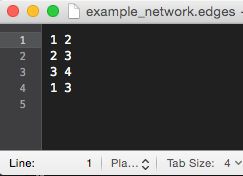
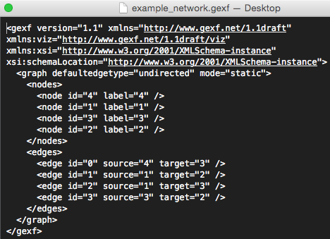
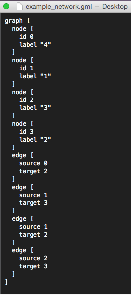
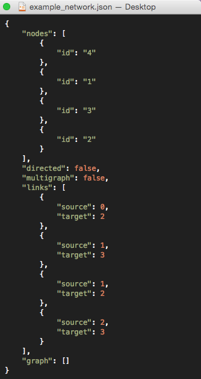

In what ways do networks come?
Or more accurately, what can I load in Gephi?
There are a number of ways that you can store network data and Gephi will accept most of those
formats. Here I'll try to give you an overview of the different file types and how they are stored.
This list isn't exhaustive, but is directed towards what Gephi can load.
To show the differences I've created a very simple sample network with only four nodes. The network
looks like this:

Told you it was simple! I'll go through each of these file formats and show what the network would
look like in each. What type of file format you need depends on how much information you want to
store. If you want to store what a graph should visually look like, then you should use a more
complex file type (like GEXF or GraphML). If you want it to be easily edited or used by someone else
then something like an edgelist is best. If you're going to geek out on some graph statistics, then
most people prefer an adjacency matrix. The actual gephi website has a great
table that compares all of the formats
and their ability to encode different information.
For graph formats that are very long you won't be
able to see the details of the format in these small thumbnails, but if you open them in a new tab
you will see the image at full resolution. Also, I'm not going to go over every single format, just
the most important ones that cover a variety of use cases for needing to store different
information. As an example, GraphML and GEXF both store network data in a similar manner but GEXF
can incorporate dynamical data so I show it and ignore GraphML.
One thing I suggest though, is to make sure to save your
graph in some format with the features that you need that is not the Gephi file format. That way if
another program ever comes along that is better to use for you than Gephi, it'll be easy to load
your data into it.
CSV files
A CSV file is a very generic file format and you're probably already seen it elsewhere. If you open
a CSV file in Excel you'll see a spreadsheet, if you open it in a text editor you'll just see rows
of values separated by commas (thus where the name comes from: CSV='comma-separate values'). You can
store as many values as you want in each row but the simplest example of a network stored in a CSV
is one where you have two columns of node names. Each row represents an edge and establishes a connection
from one node to another node.
A CSV file can be useful because you can store a large number of attributes for the edges by just
having additional columns. So you could label an edge as 'friend' or 'enemy' if you had a high
school social network for example.

Edgelists
An edgelist is very simple and is similar to a very basic CSV file. Each edge is a single line in
the file and the two connected nodes are listed. The difference is that a space separates the node
names instead of a comma. Typically this will be the only information contained in edgelist,
although sometimes there is a third field (again separated by a space) that would be the numeric
weight of the edge. Edge lists are very simple (both visually and to make by hand), which leads to
their general availability but inability to add complex additional information (like hierarchy or
where nodes should be placed in an image).

GEXF
A GEXF file is a much more complicated structure. It uses XML (which is a markup format for storing data), which isn't very friendly to a normal human to write but very easy for a computer. Because of this it can store lots of additional information (like how the graph should be visualized), but you wouldn't want to write it by hand.

GML
Graph Markup Language (GML) is one of the earlier attempts to create a file that could save
additional attributes and visual representation. It's a bit verbose but it still could be written
relatively easily by hand. You have a graph object that you declare and the parts of the graph go
inside the brackets. To specify a node or an edge you say that it is a `node` or `edge` and put its
attributes inside the brackets. When you specify the nodes that have an edge you use their integer
id instead of their label (if you already have integer labels it will still create a numeric id fo
r the nodes). GML works fairly well, but I have had a few networks in the GML format be unreadable
when used in different programs in the past so I don't typically recommend using it.

JSON
JSON is not supported by Gephi as an input currently, but I am including it because it is both (i)
my current favorite and (ii) a popular format to use for web visuals (see the
D3 website). JSON can be very compact (and ugly)
or have space put in to make it very readable. Similar to GML, it uses very basic syntax and and has
different entries for either nodes or edges. In the same manner, it also numerically labels nodes in
the order that they are listed and uses those numeric labels when defining edges. Unlike GML though
(and confusingly for people the first time they see it), this labelling is not made explicit! It
doesn't say anywhere that the first node listed has an id of 0, you just need to know it.
In any case, it's a really nice portable format that can be directly used on the web.

{kind=link}